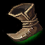
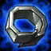

Basic Items
Basic items are typically the very cheap items and can not be built from smaller items but can usually build into bigger items. Some of these items are usually considered starting items and are meant to assist with the first few minutes of the game.
Starting items include the following items:
| Ancient coin |  |
| Boots of Speed |  |
| Cloth Armor |  |
| Doran's Blade |  |
| Doran's Ring |  |
| Hunter's Machete |